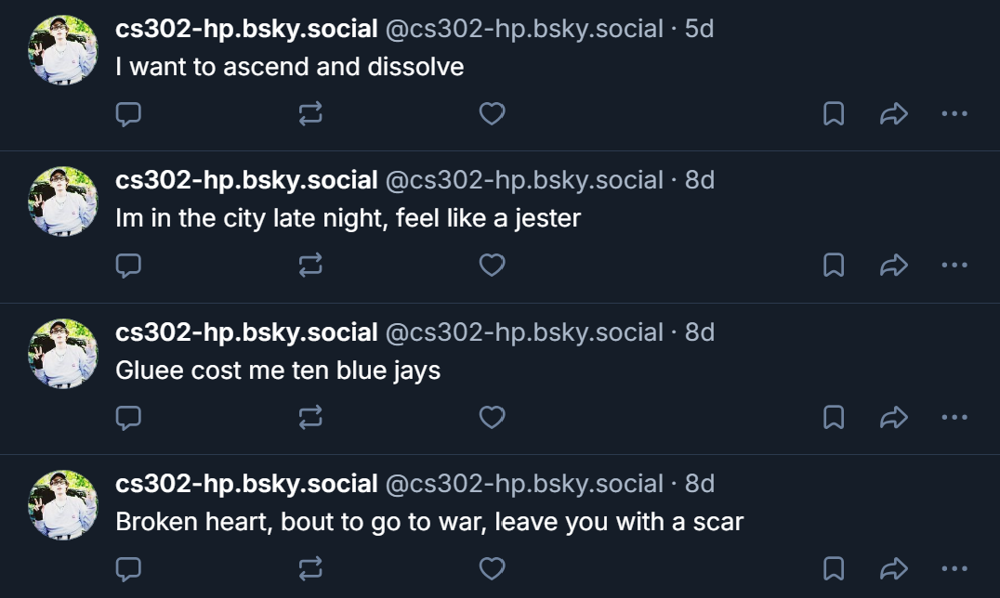
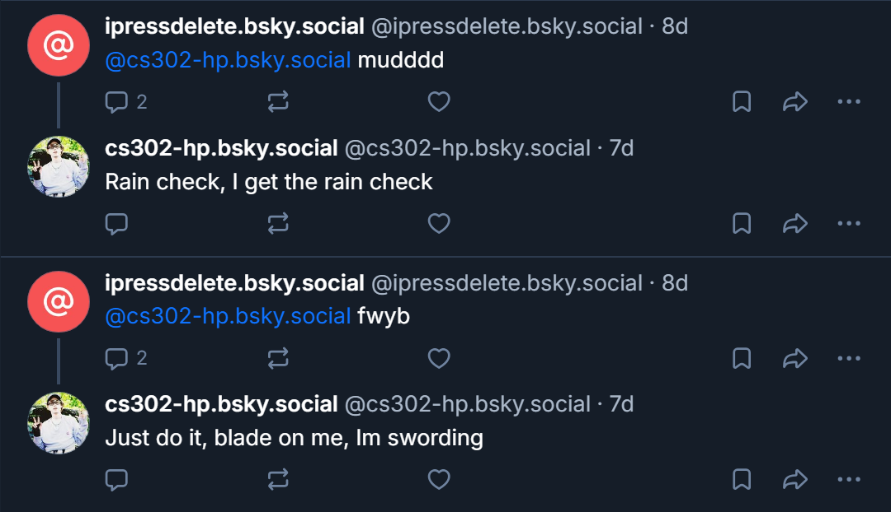

BladeeBot has 3 primary functions. The first is to make a text post, containing a random Bladee lyric. The second is to make an image post, containing a random picture of Bladee. Third is to reply to all mentions with a random Bladee lyric. For the images, I downloaded a selection of pictures from Bladee's last.fm page. For the lyrics, I downloaded a database of every single Bladee song, which I found on hugging face. My design choices were simple. Both the text posts and replies simply grab one stripped line from the song database, and the image functionality simply chooses one image from the database and posts it with no text. Because all of my text posts use a database, I both interact with other users through replies and use an external package for the posts.
Our pre-class readings greatly informed just how manipulative and destructive bots and botnets can be on social media. The article from UBC (cited below) about botnets especially helped to inform me. It revealed how simple it can
be to break into social circles on social media, and how that can be manipulated to spread misleading information or gain monetary value through conning. Our in class discussions also helped contextualize how others interact, or
think they interact with bots on social media. Certain students expressed how they thought they interacted with very few bots on social media, which surprised me, as I feel like I know that I interact with bot content on social media,
even if I don't want to be. Adit brought up the point that the final goal of social media is to turn us into ad watching machines, and I fully agree.
The one lingering question I have is how will social media be regulated in the future? It clearly has been and continues to be harmful to its users, especially children and teens, and not much legislation has been put out to counteract
this. Social media has become a trillion dollar industry, and where there is money to be made, there are people to be exploited. What can lawmakers realistically do to minimize this damage?
Social Media, Ethics, and Automation. (2023). Social Media, Ethics, and Automation. https://social-media-ethics-automation.github.io/book/bsky/intro.html#
Stieglitz, Stefan; Brachten, Florian; Ross, Björn; and Jung, Anna, "Do Social Bots Dream of Electric Sheep?
A Categorisation of Social Media Bot Accounts" (2017). ACIS 2017 Proceedings. 89.
https://aisel.aisnet.org/acis2017/89
Savage, S., Monroy-Hernandez, A., & Höllerer, T. (2016). Botivist: Calling Volunteers to Action using Online Bots. Proceedings of the 19th ACM Conference on Computer-Supported Cooperative Work & Social Computing - CSCW ’16. https://doi.org/10.1145/2818048.2819985
Boshmaf, Y., Muslukhov, I., Beznosov, K., & Ripeanu, M. (2011). The socialbot network. Proceedings of the 27th Annual Computer Security Applications Conference on - ACSAC ’11. https://doi.org/10.1145/2076732.2076746